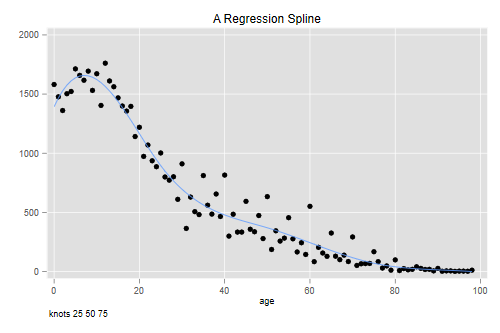
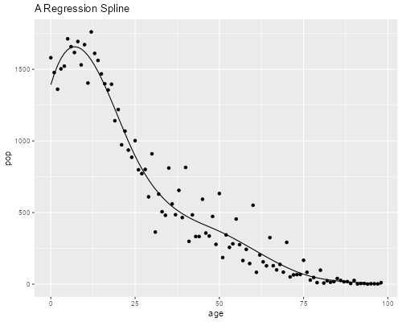

<h2 id="smoothing-splines">Smoothing: Splines</h2>
<p>This continues our work on smoothing. Let's start by making sure we
have loaded the data.</p>

{% include srtabs.html %}

<pre class='stata'>. infile age pop using ///
>   https://grodri.github.io/datasets/cohhpop.dat, clear
(99 observations read)
</pre>
<pre class='r'>> co &lt;- read.table("https://grodri.github.io/datasets/cohhpop.dat",
+   col.names=c("age","pop"), header=FALSE)
</pre>
<p>Our application will focus on regression splines, because they are
the easiest ones to use, but we will mention briefly natural regression
splines and smoothing splines.</p>
<h3 id="regression-splines">Regression Splines</h3>
<p>A cubic spline <em>S(x)</em> with knots <em>t<sub>1</sub> …
t<sub>k</sub></em> has linear, quadratic and cubic terms on <em>x</em>,
and one term of the form <em>(x -
t<sub>1</sub>)<sup>3</sup><sub>+</sub></em> for each knot. The
<em>+</em> notation instructs us to take the positive part of the
argument. These terms are easy to compute and can be entered as
predictors in a regression, although one should be careful about
multi-collinearity when there are lots of knots.</p>
<p>A better solution is to use <em>b-splines</em>, a well-conditioned
basis for splines. <span class="stata">Stata does not have built-in
b-splines, but Roger Newson has contributed a command called
<code>bspline</code>.</span><span class="r">R has a function
<code>bs()</code> included in the <code>splines</code> package as part
of the base installation.</span>The Stata and R implementations use
somewhat different bases, but lead to the same fitted values.</p>
<p>Let us use spline regression to smooth the Colombian data. We will
use a cubic spline with three internal knots at ages 25, 50 and 75. This
spline has a total of 7 parameters. <span class="stata">In
<code>bspline</code> you need to specify the minimum and maximum as
knots. You should also</span><span class="stata">specify
<code>p(3)</code> to get cubic splines (the default is linear) and seven
output variables.</span><span class="r">In R the spline basis may be
specified as part of the model.</span></p>
<pre class='stata'>. bspline, xvar(age) knots(0 25 50 75 100) p(3) gen(_bs3k)
</pre>
<p>We now regress the population counts on the spline basis <span
class="stata">omitting the constant (or one of the generated
variables).</span>I skip the detailed output because we are interested
in the fitted values only.</p>
<pre class='stata'>. quietly regress pop _bs3k*, noconstant

. predict bs3k
(option xb assumed; fitted values)

. twoway (scatter pop age)(line bs3k age) , legend(off)  ///
>   note(knots 25 50 75) title(A Regression Spline)

. graph export cohhrs.png, width(500) replace
file cohhrs.png saved as PNG format
</pre>
<p></p>
<pre class='r'>> library(splines)
> library(dplyr)
> library(ggplot2)
> sf &lt;- lm(pop ~ bs(age, knots=c(25, 50, 75)), data=co)
> co &lt;- mutate(co, smooth=fitted(sf))
> ggplot(co, aes(age, pop)) + geom_point() + 
+   geom_line(aes(age, smooth)) + ggtitle("A Regression Spline")
> ggsave("cohhrsr.png", width=500/72, height=400/72, dpi=72)
</pre>
<p></p>
<p>As you can see, the spline does an excellent job smoothing the data.
Try using four knots at ages 20, 40, 60 and 80. The fit will look very
similar. Placing the knots is an art; a common choice is to place them
at given quantiles, for example the quartiles Q1, Q2 and Q3 if you want
three internal knots. The number of knots is chosen to balance
smoothness and goodness of fit.</p>
<h3 id="the-power-series">The Power Series</h3>
<p>Just to convince yourself that there is nothing magic about
b-splines, we will reproduce the results “by hand” using the power
series as described in the handout</p>
<pre class='stata'>. gen age2 = age^2

. gen age3 = age^3

. gen k25 = cond(age > 25, (age - 25)^3, 0)

. gen k50 = cond(age > 50, (age - 50)^3, 0)

. gen k75 = cond(age > 75, (age - 75)^3, 0)

. quietly regress pop age age2 age3 k25 k50 k75

. predict myspline
(option xb assumed; fitted values)

. sum bs3k myspline

    Variable │        Obs        Mean    Std. dev.       Min        Max
─────────────┼─────────────────────────────────────────────────────────
        bs3k │         99    563.1313    556.2422  -.7697959   1657.724
    myspline │         99    563.1313    556.2422  -.7688386   1657.724

. corr bs3k myspline
(obs=99)

             │     bs3k myspline
─────────────┼──────────────────
        bs3k │   1.0000
    myspline │   1.0000   1.0000
</pre>
<pre class='r'>> cox &lt;- mutate(co, age2 = age^2, age3 = age^3,
+   k25 = ifelse(age > 25, (age - 25)^3, 0),
+   k50 = ifelse(age > 50, (age - 50)^3, 0),
+   k75 = ifelse(age > 75, (age - 75)^3, 0))
> sf2 &lt;- lm(pop ~ age + age2 + age3 + k25 + k50 + k75, data=cox)
> fits &lt;- mutate(cox, myspline = fitted(sf2)) |> 
+   select(smooth, myspline)
> summary(fits)
     smooth             myspline        
 Min.   :  -0.7688   Min.   :  -0.7688  
 1st Qu.:  82.1765   1st Qu.:  82.1765  
 Median : 380.0158   Median : 380.0158  
 Mean   : 563.1313   Mean   : 563.1313  
 3rd Qu.: 920.1823   3rd Qu.: 920.1823  
 Max.   :1657.7240   Max.   :1657.7240  
> cor(fits)
         smooth myspline
smooth        1        1
myspline      1        1
</pre>
<p>As you can see, we get essentially the same results, a tribute to the
numerical prowess of modern statistical software in the presence of high
multicollineary. In case you are curious the correlation between age and
its square is 0.9676, between age<sup>2</sup> and age<sup>3</sup> is
0.9859, and between age<sup>3</sup> and the first knot is 0.9867. The
terms in the b-spline basis have much lower inter-correlations.</p>
<h3 id="natural-splines">Natural Splines</h3>
<p>Sometimes we have little information at the extremes of the range.
Natural cubic splines, which are constrained to be linear outside the
range of the data, provide a useful tool in those circumstances. Note
that requiring linearity outside the range of the data imposes
additional smoothness constraints inside the range; for example the
polynomials used at the ends must terminate with zero curvature. <span
class="stata">Stata does not have a natural cubic spline function, but
coding one is not too hard.</span><span class="r">R’s function
<code>ns()</code> in the <code>splines</code> package provides a natural
spline basis.</span></p>
<h3 id="smoothing-splines-1">Smoothing Splines</h3>
<p>A smoothing spline has a knot at each data point, but introduces a
penalty for lack of smoothness. If the penalty is zero you get a
function that interpolates the data. If the penalty is infinite you get
a straight line fitted by ordinary least squares. Usually a nice
compromise can be found somewhere in between. We usually focus on
splines of odd degree, particularly on cubic splines which have some
nice properties as noted in the handout.</p>
<p>Stata and R do not have built-in functions for computing smoothing
splines, but it is not too difficult to construct one using the results
on page 7 of the handout.</p>
